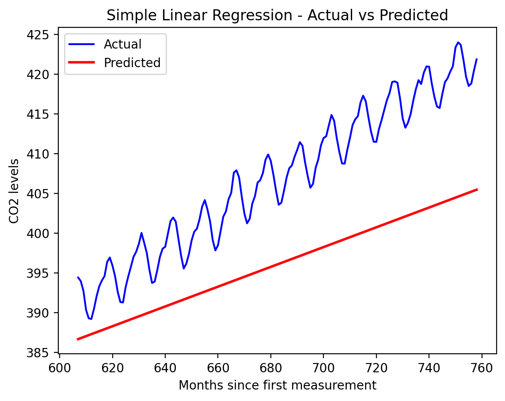
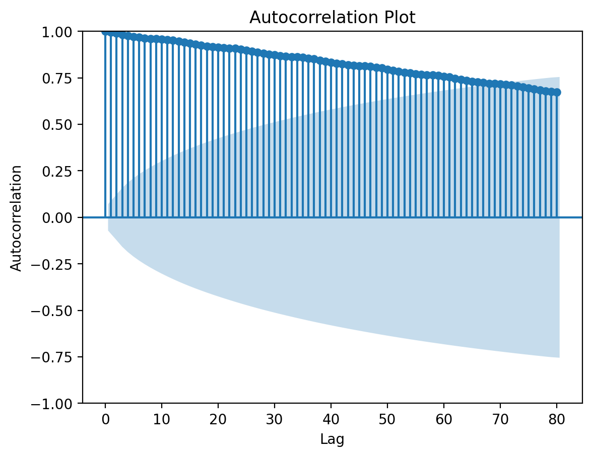
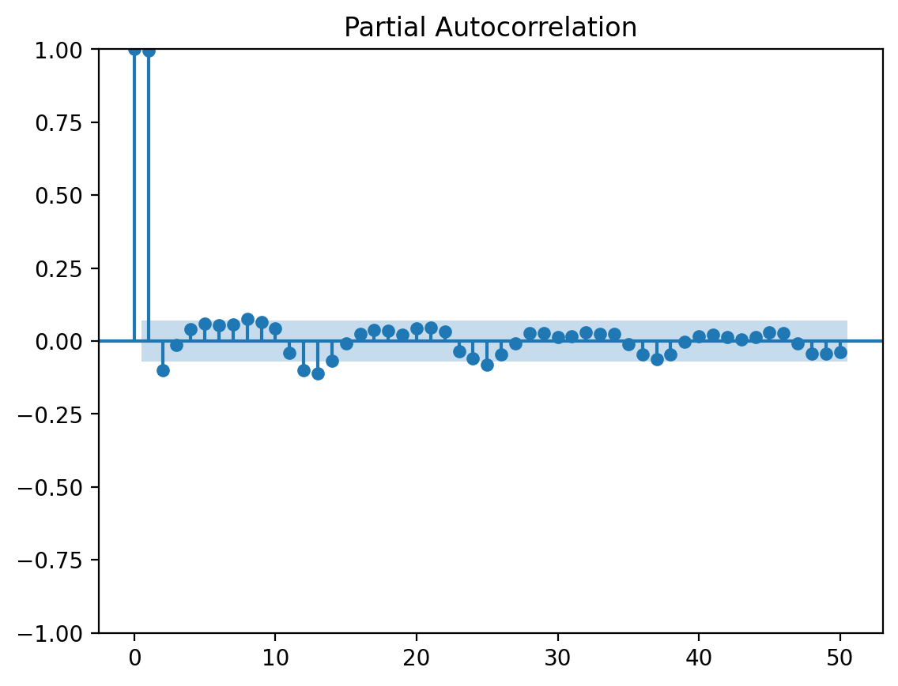
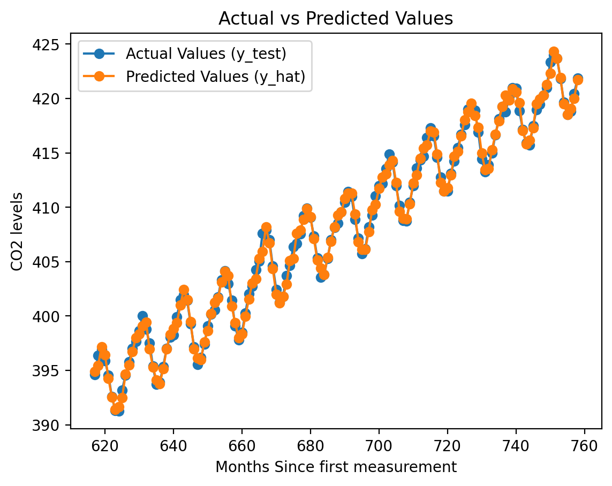
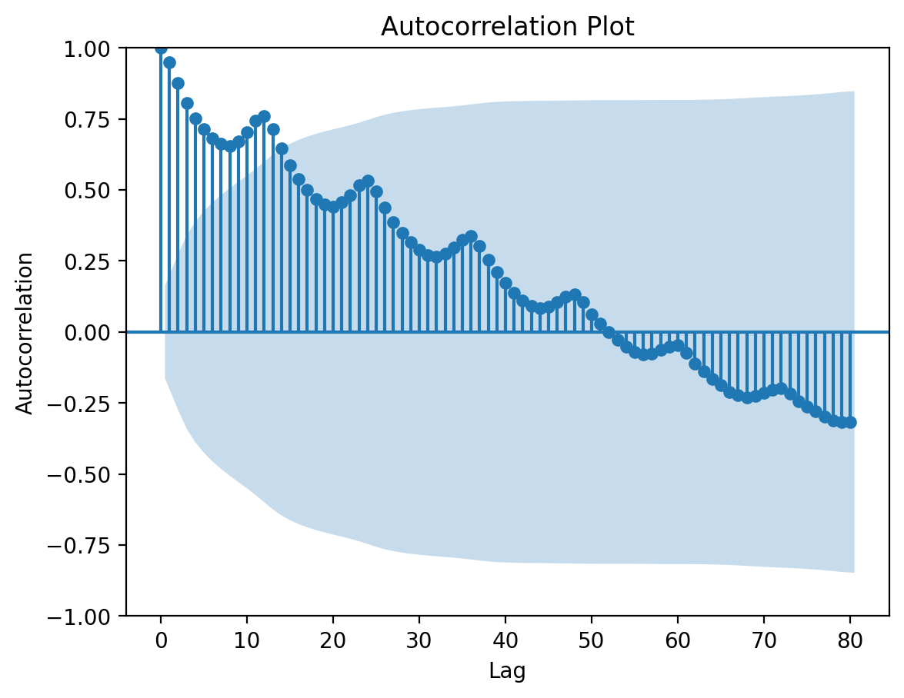
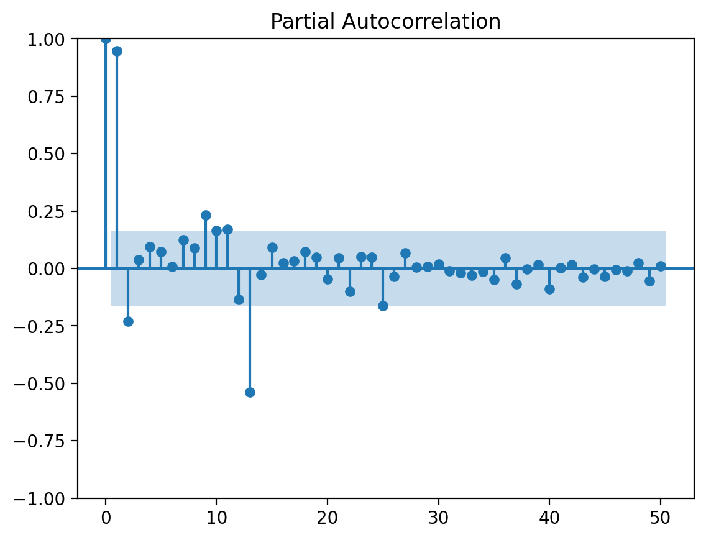
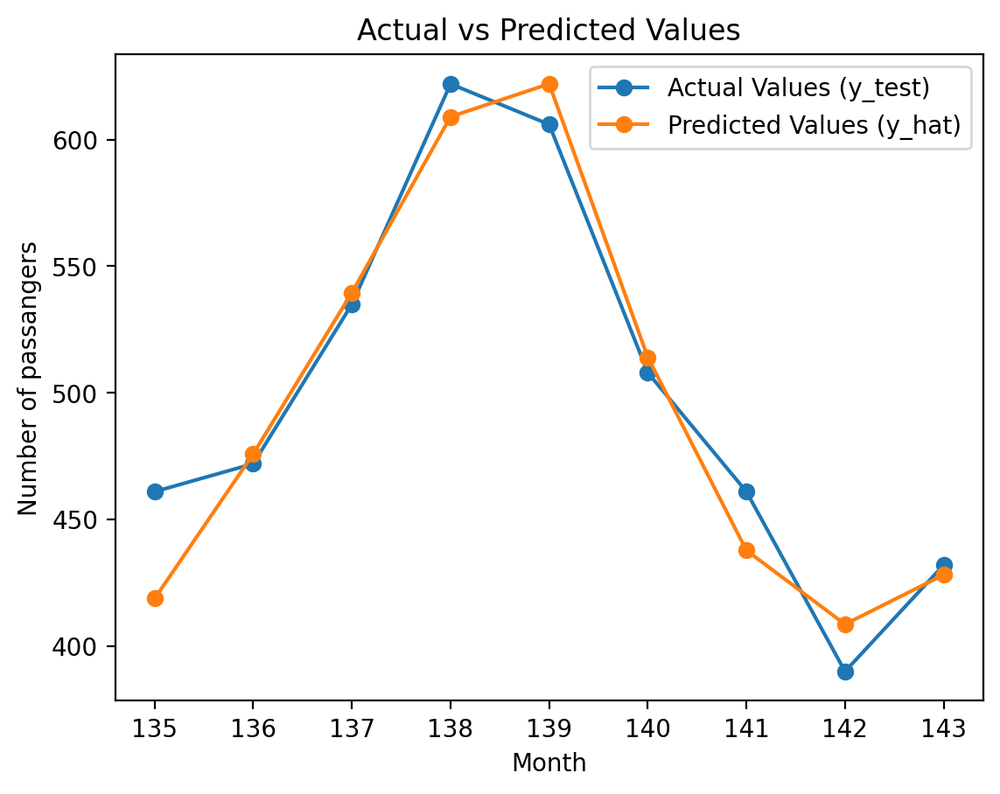

# Download CO2 data from NOAAurl ='https://gml.noaa.gov/webdata/ccgg/trends/co2/co2_mm_mlo.csv'names ='year,month,decimal date,average,deseasonalized,ndays,sdev,unc'.split(',')# no indexdf = pd.read_csv(url, skiprows=72, names=names, index_col=False)
# Create X and y# X = months since first measurementX = np.array(range(len(df)))y = df.average.values
plt.plot(X, y)plt.xlabel('Months since first measurement')plt.ylabel('CO2 Level')
Text(0, 0.5, 'CO2 Level')
Simple Linear Regression model
# Spliting the data into train and test, 80:20 splity = y.flatten().tolist()split_index =int(0.8*len(y))train_data = y[:split_index]X_train_data = X[:split_index]test_data = y[split_index:]X_test_data = X[split_index:]
# Simple linear regression model that uses just the month value as the inputreg_slr = LinearRegression().fit(np.array(X_train_data).reshape(-1, 1), train_data)y_hat_slr = reg_slr.predict(np.array(X_test_data).reshape(-1, 1))
# Plotting the actual values (y)plt.plot(X_test_data, test_data, color='blue', label='Actual')# Plotting the predicted values (y_hat)plt.plot(X_test_data, y_hat_slr, color='red', linewidth=2, label='Predicted')# Adding labels and titleplt.xlabel('Months since first measurement')plt.ylabel('CO2 levels')plt.title('Simple Linear Regression - Actual vs Predicted')plt.legend()# Display the plotplt.show()

Autocorrelation Function (ACF):
The Autocorrelation Function (ACF) measures the correlation between a time series and its lagged values. It quantifies how well the previous observations at different lags explain the current observation. ## Partial Autocorrelation Function (PACF):
The Partial Autocorrelation Function (PACF) measures the correlation between a time series and its lagged values, while controlling for the intermediate lags. It helps identify the direct relationship between two time points, excluding the influence of other time points in between.
y_co = pd.Series(y)
# Plot the autocorrelation function (ACF) using statsmodelsplt.figure(figsize=(10, 6))plot_acf(y_co, lags=80, title='Autocorrelation Plot')plt.xlabel('Lag')plt.ylabel('Autocorrelation')plt.show()
<Figure size 1000x600 with 0 Axes>

from statsmodels.graphics.tsaplots import plot_pacfplot_pacf(y_co, lags=50)plt.show()

Auto Regressive Model
We convert the CO2 level time sequence into an input feature matrix and the corresponding output vector by setting a lag value. A sliding window of lag length will be used across the sequence to create the feature matrix and the output.
# making the features using previous values according to lagdef make_dataset(y, X, lag): X_train = [] y_train = [] months = []for i inrange(len(y)-lag): row = y[i:i+lag] y_train.append(y[i+lag]) X_train.append(row) month_value = X[i+lag] months.append(month_value) X_train = pd.DataFrame(X_train) y_train = pd.Series(y_train)return X_train, y_train, months
# adding the month value as a featuredef make_dataset_with_month(y, X, lag): X_train = [] y_train = [] months_train = []for i inrange(len(y)-lag): row = y[i:i+lag] y_train.append(y[i+lag]) X_train.append(row) month_value = X[i+lag] months_train.append(month_value) X_train = pd.DataFrame(X_train) X_train[10] = months_train y_train = pd.Series(y_train)return X_train, y_train, months_train
# example run of the model using a lag of 10lag =10X_train, y_train, months_train = make_dataset(train_data, X_train_data, lag)reg = LinearRegression().fit(X_train, y_train)X_test, y_test, months_test = make_dataset(test_data,X_test_data, lag)y_hat = reg.predict(X_test)mse = mean_squared_error(y_test, y_hat)print(f"Mean Squared Error (MSE): {mse}")
Mean Squared Error (MSE): 0.2099165801507042
# Ploting the predicted output for lag=10 for the test sequenceplt.plot(months_test, y_test, label='Actual Values (y_test)', marker='o')plt.plot(months_test, y_hat, label='Predicted Values (y_hat)', marker='o')plt.xlabel('Months Since first measurement')plt.ylabel('CO2 levels')plt.title('Actual vs Predicted Values')plt.legend()plt.show()

# Creating a custom class for training and testing the AR model for different lag valuesclass AR_model:def__init__(self, lag, add_month =False):self.reg = LinearRegression()self.lag = lagself.add_month = add_monthdef train_AR_model(self, train_data, X_train_data):if(self.add_month): X_train, y_train, month_train = make_dataset_with_month(train_data, X_train_data, self.lag)self.reg.fit(X_train, y_train)else: X_train, y_train, months_train = make_dataset(train_data, X_train_data, self.lag)self.reg.fit(X_train, y_train)returnself.regdef test_AR_model(self, test_data,X_test_data):if(self.add_month): X_test, y_test, month_test = make_dataset_with_month(test_data,X_test_data, self.lag) y_hat =self.reg.predict(X_test) mse = mean_squared_error(y_test, y_hat)else: X_test, y_test, months_test = make_dataset(test_data,X_test_data, self.lag) y_hat =self.reg.predict(X_test) mse = mean_squared_error(y_test, y_hat)return mse
# Finding the variation in the mse values with increasing laglag_values = [1, 5, 10, 15, 20, 30, 35, 40, 50, 55, 65]# Compairing the accuracy of the models with and without the month featureloss_table_1 = []loss_table_2 = []for lag in lag_values: model_1 = AR_model(lag) model_2 = AR_model(lag, True) reg1 = model_1.train_AR_model(train_data, X_train_data) reg2 = model_2.train_AR_model(train_data, X_train_data) mse1 = model_1.test_AR_model(test_data,X_test_data) mse2 = model_2.test_AR_model(test_data,X_test_data) loss_table_1.append((lag, mse1)) loss_table_2.append((lag, mse2))
# Visualize the loss valueslags, losses1 =zip(*loss_table_1)lags, losses2 =zip(*loss_table_2)plt.plot(lags, losses1,label='Without month as a feature', marker='o')plt.plot(lags, losses2,label='With month as a feature', marker='o')plt.xlabel('Lag')plt.ylabel('Mean Squared Error (MSE)')plt.title('Loss vs Lag')plt.legend()plt.show()
Using a more complicated dataset : Air passengers dataset
# downloading and plotting the dataseturl_ap ='https://raw.githubusercontent.com/jbrownlee/Datasets/master/airline-passengers.csv'df_ap = pd.read_csv(url_ap)df_ap['Month'] = pd.to_datetime(df_ap['Month'])df_ap.set_index('Month', inplace=True)df = df_applt.figure(figsize=(10, 6))plt.plot(np.array(range(len(df_ap))), df_ap['Passengers'], label='Air Passengers')plt.title('Air Passengers Over Time')plt.xlabel('Months')plt.ylabel('Number of Passengers')plt.legend()plt.show()
# Extract features (X) and target variable (y)X_ap = np.array(range(len(df_ap)))y_ap= df_ap['Passengers'].values.flatten().tolist()split_index_ap =int(0.8*len(y_ap))train_data_ap = y_ap[:split_index_ap]X_train_data_ap = X_ap[:split_index_ap]test_data_ap = y_ap[split_index_ap:]X_test_data_ap = X_ap[split_index_ap:]
y_co = pd.Series(y_ap)
# Plot the autocorrelation function (ACF) using statsmodelsplt.figure(figsize=(10, 6))plot_acf(y_co, lags=80, title='Autocorrelation Plot')plt.xlabel('Lag')plt.ylabel('Autocorrelation')plt.show()
<Figure size 1000x600 with 0 Axes>

from statsmodels.graphics.tsaplots import plot_pacfplot_pacf(y_co, lags=50)plt.show()

# example run of the model using a lag of 20lag_ap =20X_train_ap, y_train_ap, months_train_ap = make_dataset(train_data_ap, X_train_data_ap, lag_ap)reg_ap = LinearRegression().fit(X_train_ap, y_train_ap)X_test_ap, y_test_ap, months_test_ap = make_dataset(test_data_ap,X_test_data_ap, lag_ap)y_hat_ap = reg_ap.predict(X_test_ap)rmse_ap = np.sqrt(mean_squared_error(y_test_ap, y_hat_ap))print(f"Mean Squared Error (RMSE): {rmse_ap}")
Mean Squared Error (RMSE): 18.798515889301697
# Ploting the predicted output for lag=10 for the test sequenceplt.plot(months_test_ap, y_test_ap, label='Actual Values (y_test)', marker='o')plt.plot(months_test_ap, y_hat_ap, label='Predicted Values (y_hat)', marker='o')plt.xlabel('Month')plt.ylabel('Number of passangers')plt.title('Actual vs Predicted Values')plt.legend()plt.show()

Comparison with another time series model : ConvLSTM
# Ploting the predicted output for lag=10 for the test sequenceplt.plot(months_test_ap, y_test_ap, label='Actual Values (y_test)', marker='o')plt.plot(months_test_ap, y_hat_ap, label='Predicted Values : ARM', marker='o')plt.plot(months_test_ap, y_hat_lstm, label='Predicted Values : ConvLSTM', marker='o')plt.xlabel('Month')plt.ylabel('Number of passangers')plt.title('ARM vs ConvLSTM')plt.legend()plt.show()
import randomdef random_split(original_number):# Find factors of the original number factors = [i for i inrange(2, original_number) if original_number % i ==0]# Select one factor randomly factor = random.choice(factors)# Calculate the other factor other_factor = original_number // factorreturn factor, other_factor